The Drop
The night before their first big tournament, a cold box lands at an esports team house. The captain opens it on camera, the squad gets its first taste of Red Bull Sugarfree, and three scrims later nobody is tired.
Among the dominant TikTok ecommerce formats. It hijacks the gift-opening reflex (viewers stay to see what is inside), the reveal frames the product as a treat worth waiting for, and the first reaction is social proof delivered in the moment. Group unboxings multiply that proof: several faces reacting at once reads as consensus.
Contact sheet
One keyframe per shot, with the caption as it will appear.
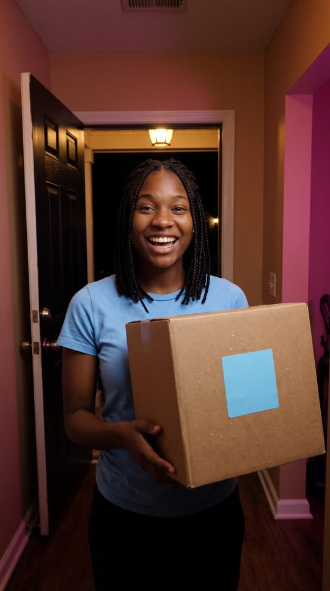
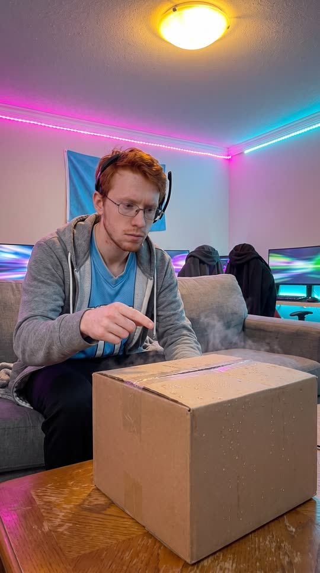
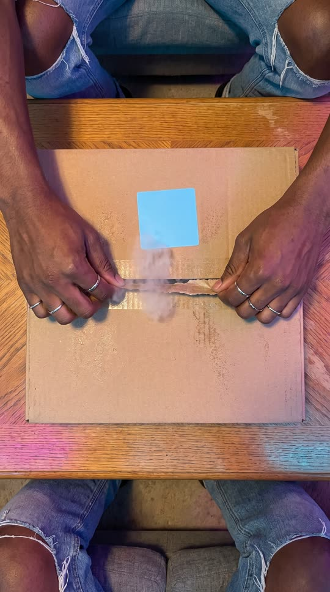
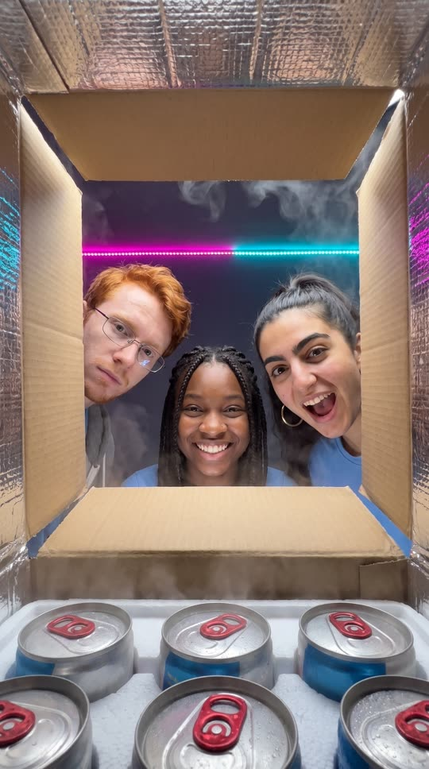
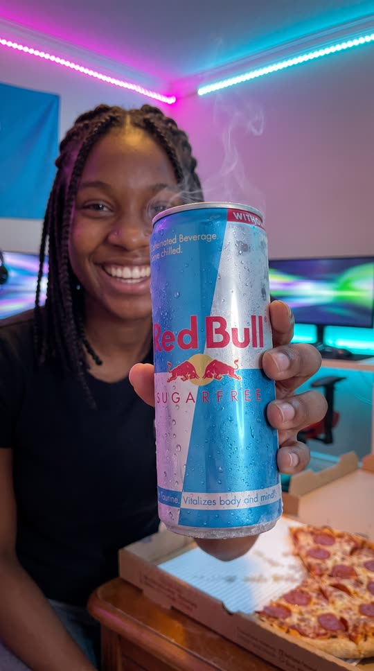
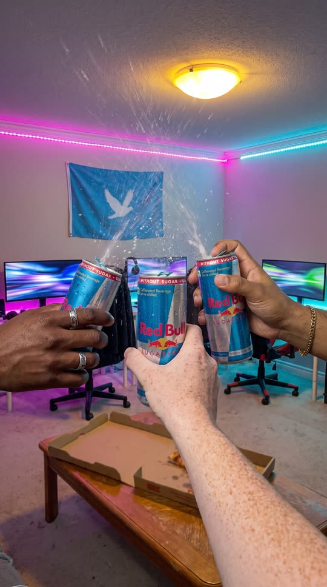

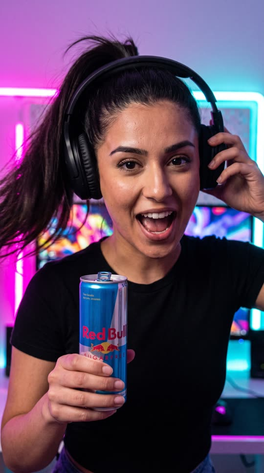

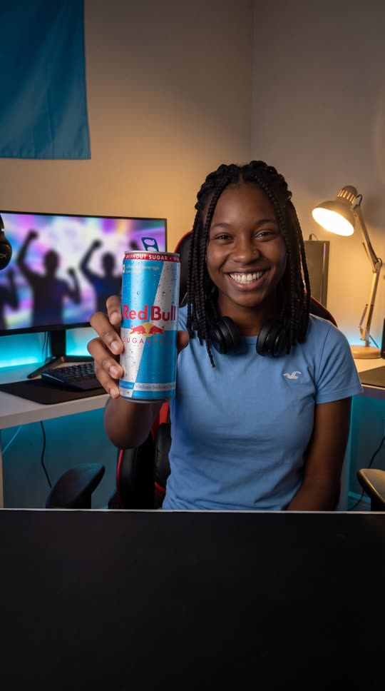
Cast and world
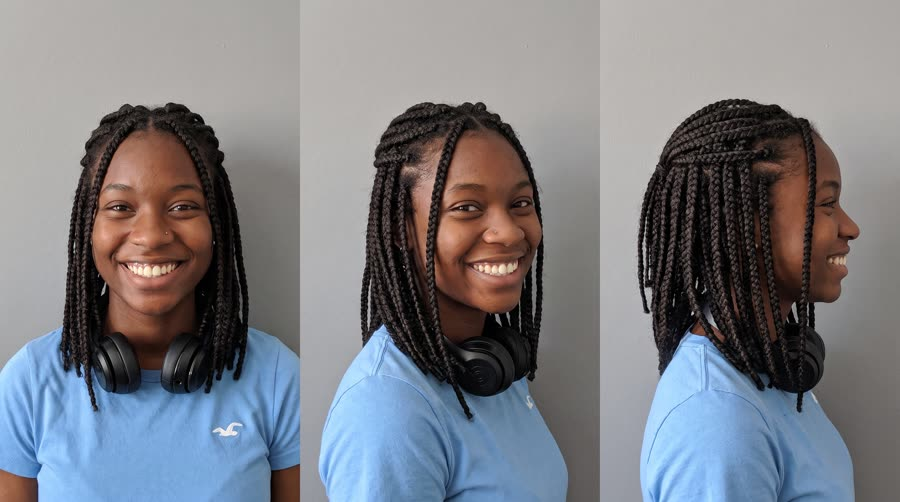
Voice: confident, quick, loud-laugh energy, captain's voice, American Midwest
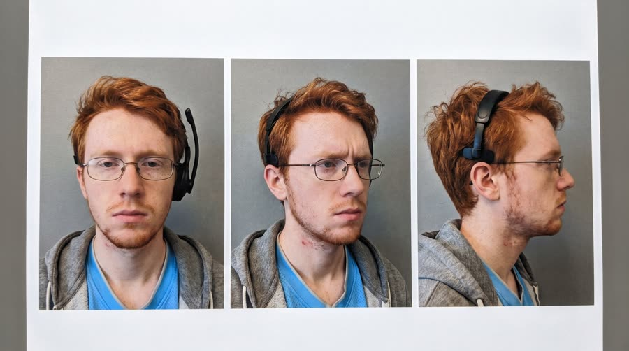
Voice: nasal, dry, deadpan, cracks when excited, American Northeast
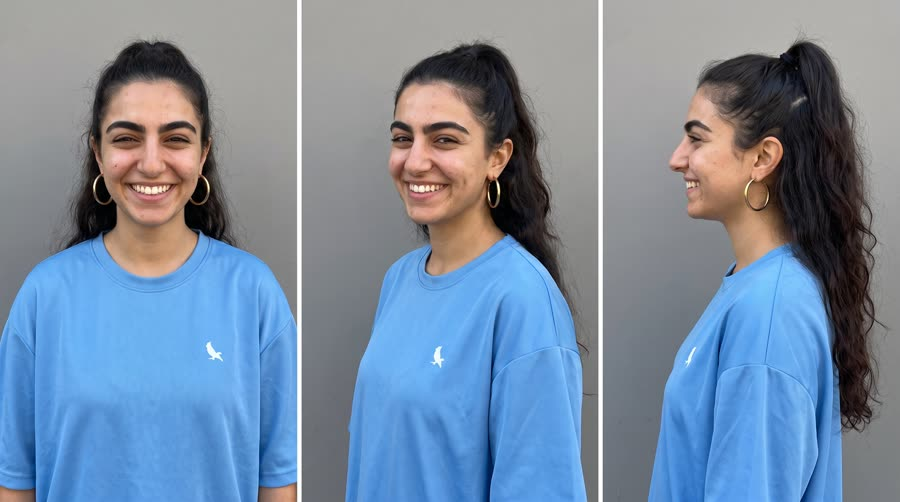
Voice: bright, fast, quick to laugh, American West Coast
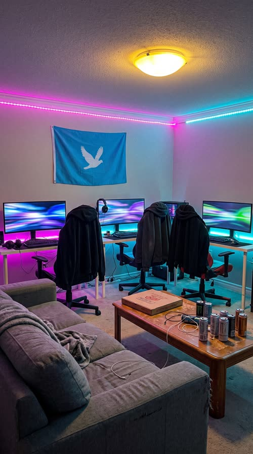
World. The shared team house of the fictional esports team Kestrel Six, a rented suburban house turned gaming house: a living room with a sagging grey couch, a coffee table, and three gaming stations along the wall, 10pm the night before the fictional Coldharbor Invitational, then 1am during practice scrims. Palette. Magenta and cyan RGB strips against warm overhead light; neutral packaging (kraft cardboard, silver insulated liner, white foam) so the silver and sky-blue can is the only hero colour when it comes out.
Fictional brands. Kestrel Six (esports team, plain sky-blue jerseys, a simple bird silhouette on the chest, no lettering); Coldharbor Invitational (tournament, never shown as text)
Beats
| Time | Beat | What happens |
|---|---|---|
| 0-2.2 | hook | A frosty box hauled through the front door at night toward the lens; the captain names the stakes: tournament tomorrow, and it just landed. |
| 2.2-6.2 | anticipation | The box hits the coffee table, the skeptic asks why it's cold, top-down tape rip and a puff of cold air. |
| 6.2-11.6 | reveal | POV from inside the box up at three faces; the captain lifts one can to the lens and names it. |
| 11.6-18.2 | first-try | Three cans crack together, then fast first-sip reactions, one face per shot. |
| 18.2-24.6 | payoff | 1am practice: the squad still sharp, Owen jumps up after a third straight win. |
| 24.6-30 | cta | Kiara at her station holds her can to the lens: get yours before game day, and the tagline. |
Screenplay
52 spoken words in 30 s. Each line keeps its intent (fixed in the template) and its wording (written for this product).
| Time | Speaker | Line | Intent (template) |
|---|---|---|---|
| 0.3-2.1 | Kiara | Tournament's tomorrow. And it just landed. breathless grin, hauling the box, loud enough for the house | Hook: name the high-stakes moment and announce the package arrival. |
| 2.5-3.9 | Owen | Is that cold? Why is it cold? deadpan then genuinely curious, leaning off the couch | Curiosity: a sensory detail of the package that makes the viewer want it opened. |
| 4.3-5.5 | Kiara (off camera) | Okay. Moment of truth. low and dramatic, hands on the tear strip | The open: build the reveal. |
| 6.6-7.9 | Noor | Oh, it's the silver ones. delighted gasp, peering into the box | First sight: an unscripted-sounding reaction to what is inside. |
| 8.5-11.4 | Kiara | Red Bull Sugarfree. Same benefits as the original. No sugar. clear, proud, a touch slower on the name, like presenting a trophy · Say: RED BULL SHUG-er-free, three clear words | Product line: name the product clearly while it is held to the lens, with the one allowed benefit. |
| 14.3-15.4 | Owen | Okay, that's good. surprised, grudging, nodding slowly | First reaction from the skeptic: a short honest verdict. |
| 16.0-17.9 | Noor | Alert. Focused. Queue us up. fast, hyped, already pulling her headset on | The benefit as a reaction, tied to the task ahead. |
| 22.4-23.8 | Owen | GG. That's three straight. voice cracking with excitement, standing, hands on head · Say: GG said as 'jee jee' | Payoff: proof in the world, the win. |
| 25.4-29.6 | Kiara | Get yours before game day. Wiiings without sugar. direct to lens, captain's grin, raises the can on the tagline · Say: WINGS, stretch the vowel slightly | In-world CTA from the person who opened it, then the tagline. |
Generation plan
U1 · 0 to 8.2 s · 9 s generation
Shots S01, S02, S03, S04 · References: kiara card, owen card, noor card, teamhouse plate, S01 keyframe as first frame
9:16 candid smartphone unboxing video filmed handheld by a friend in an esports gaming house at 10pm, magenta and cyan RGB light, phone noise, not cinematic. Shot 1 (0 to 2.2 s): @Image1 (Kiara) hauls a frosty plain kraft box with no labels through the front door straight toward the lens, grinning, breathless: "Tournament's tomorrow. And it just landed." Whip pan. Shot 2 (2.2 to 4 s): the box thuds onto the coffee table in the living room from @Image4; @Image2 (Owen) leans off the couch, points, deadpan then curious: "Is that cold? Why is it cold?" Hard cut. Shot 3 (4 to 6.2 s): straight top-down, Kiara's hands rip the tear strip across the lid, a puff of cold vapour; her voice, low and dramatic: "Okay. Moment of truth." Hard cut. Shot 4 (6.2 to 9 s): low POV from inside the box, the flaps fold open, vapour drifts, Kiara, Owen and @Image3 (Noor) lean over the edge lit by a cold white glow; Noor gasps: "Oh, it's the silver ones." Native sound: door, box thud, loud tape rip, hiss of cold air, cardboard flaps, overlapping voices. No music. No text on screen, no labels on the box, no logos.
U2 · 8.2 to 11.6 s · 4 s generation · exact-risk (short, cheap to re-roll)
Shots S05 · References: product can official, kiara card, S05 keyframe as first frame
9:16 candid smartphone unboxing video in a gaming house, RGB light. Handheld close-up: @Image2 (Kiara) lifts the exact can from @Image1 out of white foam and holds it still toward the lens beside her face, unopened, upright, label flat to camera, frost on it and a thin curl of cold vapour, and says clearly and proudly, a touch slower on the name: "Red Bull Sugarfree (said RED BULL SHUG-er-free, three clear words). Same benefits as the original. No sugar." Keep the can's shape, colours, wordmark, two red bulls and gold sun exactly as @Image1; it is lit by white light so the colours stay true. One can only. Native sound: foam squeak, her voice, a teammate's 'ooh'. No music.
U3 · 11.6 to 24.6 s · 13 s generation
Shots S06, S07, S08, S09 · References: owen card, noor card, kiara card, product can official, S06 keyframe as first frame
9:16 candid smartphone video in an esports gaming house, magenta and cyan RGB light, phone noise, fast handheld whip pans. Shot 1 (0 to 2.4 s): three adult hands each holding exactly one can like @Image4 crack them open together over the coffee table, fizz, laughter. Whip pan. Shot 2 (2.4 to 4.2 s): reaction close-up of @Image1 (Owen) lowering his can from a first sip, eyebrows up, grudging: "Okay, that's good." Whip pan. Shot 3 (4.2 to 6.6 s): @Image2 (Noor) holds her can at chest height and pulls her headset on, fast and hyped: "Alert. Focused. Queue us up." Hard cut. Shot 4 (6.6 to 13 s): 1am, from behind the couch, the three at their gaming desks, monitors glowing with abstract colour and no interface, one can on each desk; keyboards clatter; Owen jumps up with both hands on his head, voice cracking: "GG. That's three straight." @Image3 (Kiara) turns to him laughing, Noor raises her fists. Each person has exactly one can. Native sound: can cracks, laughter, keyboard and mouse clicks, whoops. No music. No logos, no readable screens.
U4 · 24.6 to 30 s · 6 s generation · exact-risk (short, cheap to re-roll)
Shots S10 · References: product can official, kiara card, S10 keyframe as first frame
9:16 candid smartphone video at 1am in a gaming house. Handheld medium close-up that settles still: @Image2 (Kiara) spins her gaming chair to face the lens, headset around her neck, and holds the exact can from @Image1 up toward the camera at shoulder height, label flat to the lens, lit by a warm desk lamp so the colours stay true; teammates blurred and cheering behind. She says directly, grinning: "Get yours before game day." then raises the can a little: "Wiiings without sugar (WINGS, vowel stretched slightly)." The can does not bend, warp or change: keep its shape, colours, wordmark, two red bulls and gold sun exactly as @Image1. Keep the lower third clean. Native sound: chair creak, cheering, her voice. No music, no text.
Sound, music, voice, captions
| 0 to 30 s | hype bed | Optional creator-style hype bed: a bouncy trap beat at 140 bpm with an 808 and a plucked synth hook, kept low under the voices; hard drop-out for the tape rip (4.0 to 6.2 s) and under the brand line (8.2 to 11.6 s), slams back in on the triple can crack at 11.6 s, and rides the win at 22.4 s. |
Added sound
- 4.6 s: tape rip, close and crisp (the unboxing ASMR moment the format is built on; only added if the native rip is weak)
- 11.8 s: three can cracks in near sync (the product moment must register; only added if the native cracks are weak)
- Kiara: native in U1; her U1 vocal stem as voice reference for U2, U3 and U4
- Owen: native in U1; U1 stem as reference for his U3 lines
- Noor: native in U1; U1 stem as reference for her U3 line
font: Poppins Bold, size: 5% of frame height, color: #FFFFFF, active word: #7FD3FF (cool sky blue) on the word being spoken, shadow: none, sits on a box, box: rounded rectangle, rgba(0,0,0,.62), 12px radius, 10px padding, position: centre, 64% down the frame, above the platform UI safe zone, max words on screen: 4, speaker tag: tiny lower-case first name in 60% opacity above the caption box when the speaker changes, reaction emoji: none; reactions carry themselves
Post text- 0 to 2.4 s: the night before the invitational / (creator hook text, white Poppins Bold on a black 62% rounded box, lower case, top 16% of frame, pops on at frame 1)
- 18.2 to 20.4 s: 1:04 am / (small white Poppins Medium on a translucent dark pill, upper right, marks the time jump)
- 27.6 to 30 s: Red Bull Sugarfree / Wiiings without sugar (end card in the clean lower third: Poppins Bold white on a sky-blue rounded box, pops on 6 frames)
Adaptation contract
How this same concept takes any physical product.
| Product type | Where it sits in the story | Scale |
|---|---|---|
| ingested | cans lifted from the cold box, cracked together and sipped for first reactions | hand |
| applied | tubes or jars lifted from the box and tried on the back of a hand or face in front of the group (skincare, balm, hair product) | face or hand |
| worn | each teammate pulls theirs from the box and puts it on right there (jersey, hoodie, glasses, headset, sneakers) | body |
| handheld | the device is lifted out of its foam slot, switched on and passed around (controller, mouse, earbuds, gadget) | hand |
| carried | the bag comes out of the box and gets unzipped and packed on the coffee table (backpack, gear case, sleeve) | hand to lap |
| home | the item is unpacked and set up at the stations or in the room (chair, lamp, desk mat, speaker) | room |
| consumable | packs come out of the box and each teammate opens one and tries it (snack, gum, hydration mix) | hand |
Style bible
Look. Four fixed moves in this order: the arrival (box carried toward the lens), the open (straight top-down on hands, tape and flaps), the reveal (a low POV from inside the box looking up at the faces, or a top-down lid lift), and the lift-out (the product raised to the lens, label first). Then first-use and reaction close-ups, one face per shot. The box and its inner packaging are part of the show: frost, liner, foam slots. The room is real and specific to the recipients.
Camera. One phone handled by a friend in the room: handheld with quick reframes and the occasional whip pan to whoever speaks; top-down for the open; the inside-box POV is a phone set in the box; reaction close-ups at 50 to 80 cm. 24mm to 26mm phone lens, no gimbal, no dolly.
Light and texture. Whatever the room has, pushed by one strong source: here RGB gaming light (magenta and cyan) against warm overheads, with the cold white glow of the open box as the product's key light. Faces lit by screens. Phone video: sensor noise in the dark corners, mild sharpening, a touch of motion blur on fast hands, real skin, no grade beyond the RGB colour, no film grain.
Pacing. Arrival and a stakes line inside 2 s, the open by second 4, the reveal by second 7, the product name while it is held to the lens (at least 2.5 s), first-use and reactions cut fast at 1.8 to 2.4 s each, one real-life payoff that proves the reaction, then a direct-to-lens CTA from the person who opened it.
Sound. The unboxing is an ASMR event: tape rip, cardboard flaps, a hiss of cold air, foam squeak, the can crack. Overlapping real voices, laughing, talking over each other. All native. Music only as a quiet hype bed in post, dropped for the tape rip and the brand line.
Known failures.
- the shipping box comes back covered in fake courier labels and barcodes: say plain kraft cardboard with one plain sky-blue sticker and no text
- the inside-box POV loses the box: say the camera sits on the foam inside the box, the four cardboard flaps frame the shot and the faces look down into it
- the box is filled with the wrong cans or bottles: say the foam slots hold only cans exactly like the product reference, tops visible
- group shots give two people one can, or someone holds two: say each person holds exactly one can
- monitors and keyboards grow readable game UI and brand logos: say monitors show only abstract blurred colour, keyboards and headsets have no logos
- the esports team jerseys pick up sponsor text: say plain sky-blue team jerseys with no text or logos
- RGB light turns the can's sky-blue and silver to purple: say the can is lit by the white glow of the box or a neutral lamp so its colours stay true
- cast looks like teenagers: state adult ages and say adults in their early twenties
- reaction close-ups can come back as a giant disembodied head with the can floating on a table below: ask for head and chest with shoulders in natural proportion and the can in his own named hand, and push the coffee table out of frame
- RGB living rooms fill with stray extra cans on the coffee table: say exactly one can in the whole frame for single-person shots
- jersey colour drifts to black on close-ups: restate the plain sky-blue jersey in every shot prompt
Claims and cost
Claims used (all from the product page): Same benefits of the original Energy Drink, without sugar; Caffeine helps to improve concentration and increase alertness; Wiiings without sugar (tagline)
Video estimate: 32 s of generation at $0.27/s = $8.64 first pass, $18 to 28 with retakes, plus about $0 music.